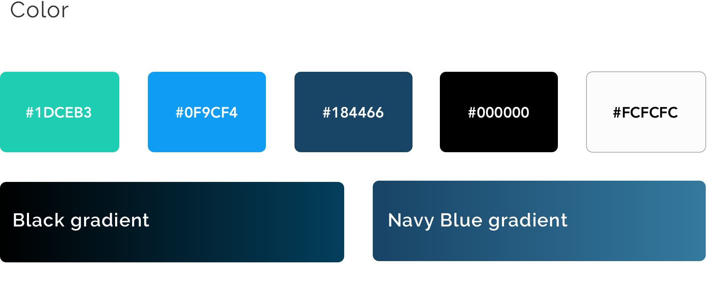
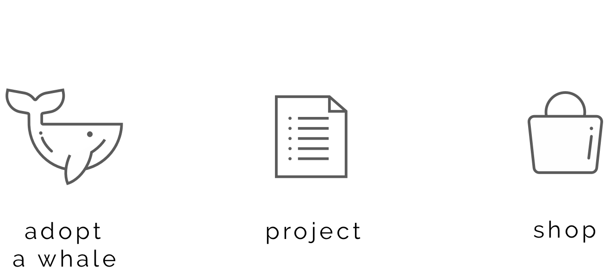

Styleguide


To highlight and visually represent the main options I created custom icons for each.
Homepage
The homepage concept was built around the idea of engaging users with strong impression about the organization identity with narrative visual support and clear content.